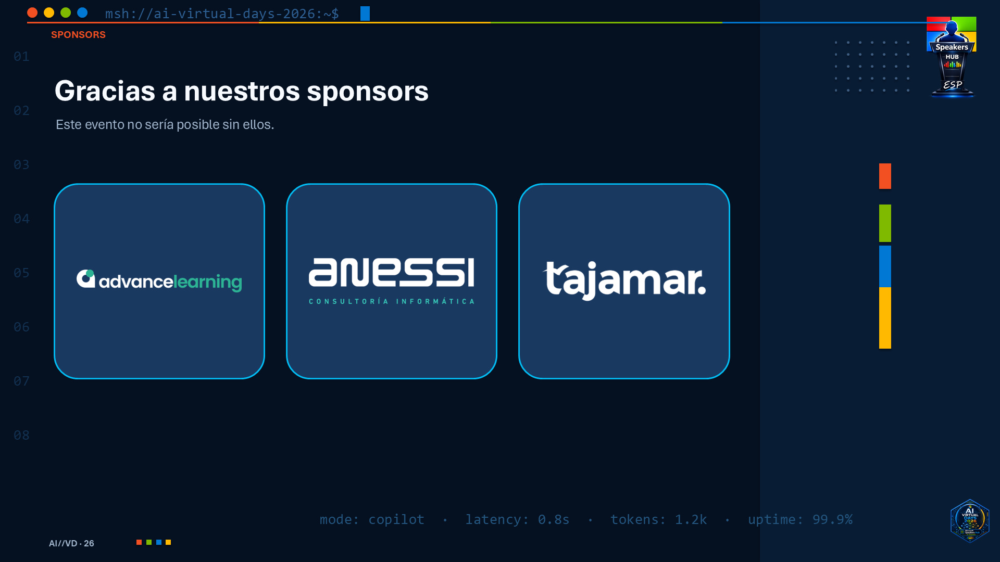

DevOps conversacional: desplegar en Fabric y Power BI hablando con un agenteUn servidor MCP para publicar sin miedo… y una pipeline que lo demuestra con tests.
Datos, IA y despliegues que no dan miedo.
Del botón «Publicar» a un ciclo de vida que se pide en lenguaje natural.
Desktop → «Reemplazar» → ¿qué versión hay en producción? ¿cuándo se subió? ¿quién la tocó?
| Solución | Qué hace bien | Qué te exige antes de empezar |
|---|---|---|
| Publicar en Desktop | Inmediato | Nada… y nada te protege |
| Deployment Pipelines | Promoción visual entre etapas | Capacidad Fabric / Premium |
| fabric-cicd | CI/CD oficial desde Git | Git + Azure DevOps o GitHub Actions ya montados |
| REST / pyfabricops | Control total | Python y conocer la API |
| Este MCP | Entornos, promoción, drift, histórico | Un agente y tus permisos de siempre |
Menos magia, más recorrido: cada frase acaba en una llamada REST concreta.
antes
Desplegar con garantías = más DevOps: YAML, agentes, licencias.
ahora
Pides en lenguaje natural; el agente ejecuta tools deterministas.
innegociable
Trazabilidad, entornos, drift y auditoría. Siempre.
«Despliega mi informe a producción»… y que ocurra de verdad, con trazabilidad y control.
Lista los workspaces que tengan 'Demo' en el nombre ⚙ list_workspaces ¿Qué hay publicado en Ventas Demo? ⚙ get_workspace_contents → modelo Ventas · informe Ventas ✎ Desktop: nueva medida «Margen %» · guardar .pbip Sube el proyecto de D:\Demo\Ventas a Ventas Demo ⚙ upload_semantic_model → operation: "updated" ⚙ upload_report → operation: "updated" ✓ medida nueva visible · filas cargadas intactas Sube D:\Demo\DashboardVentas.Report a «Informes» y enlázalo a ModeloVentas del workspace Test ⚙ upload_report(rebind_to_model, rebind_workspace_name) ✓ definition.pbir parcheado → apunta al modelo correcto
Mismo tool, distinto camino de API según el formato.
Tres preguntas que cualquiera puede hacer — y que antes requerían a alguien de plataforma.
«¿Qué se subió a WS Prod, cuándo y con qué ID?»
query_deployments
«¿Cuándo se descargó ModeloVentas y a qué ruta?»
query_version_history
«Copia de seguridad completa de WS Prod en D:\Backups»
download_workspace
Publica el PBIP de src\Powerbi en «AIVD Demo Agente …» y deja el informe enlazado al modelo de ese workspace ── A · con powerbi-mcp ────────────────────────────── ⚙ upload_semantic_model → created ⚙ upload_report(rebind_to_model) → created · enlazado ⚙ query_deployments → quién, cuándo, desde dónde ── B · sin MCP (az + API REST) ─────────────────────── ▶ az account get-access-token · GET /workspaces ▶ empaquetar partes base64 · ¿.platform? ¿.pbi? ▶ POST /items → 202 → sondear la operación… ✗ informe: byPath no vale en el servicio → byConnection ✗ «¿qué se desplegó hoy?» → no queda registro
| Criterio | Agente sin MCP | Agente con powerbi-mcp |
|---|---|---|
| Cómo lo hace | Improvisa scripts contra la API REST | Tools deterministas: upload_semantic_model, upload_report |
| Lo que tiene que descubrir | base64, LRO, .platform, byPath → byConnection | Nada: va en la tool |
| Repetible | Cada ejecución, un script distinto | Mismo resultado cada vez |
| Historial | Ninguno | query_deployments · query_version_history |
| Siguiente paso | Copiar el script… y mantenerlo | El mismo CLI en GitHub Actions |
Device flow, entornos, mapeo de workspaces y los patrones que hacen fiable un MCP.
Modo auto: prueba de lo más barato a lo más interactivo. El agente nunca ve tu contraseña.
Token cifrado por Windows en ~/.powerbi-mcp-deployment
MSAL con el refresh token, sin preguntarte
AzureCliCredential · --method az_cli
Código + navegador, una vez, con tu cuenta corporativa
azure/login con OIDC deja una sesión az y el MCP la reutiliza. Sin secretos y sin un humano delante.# entornos y proyecto ya creados (env-create · project-create) $ pbi_cli.py deploy Ventas Desarrollo D:\Proyectos\Ventas --respect-local-structure $ pbi_cli.py promote Ventas Integración $ pbi_cli.py deploy Ventas Producción D:\Proyectos\Ventas # hotfix $ pbi_cli.py promote Ventas Producción ⚠ Divergencia detectada respecto al entorno origen (Integración): [SemanticModel] ModeloVentas: - el último cambio en este entorno fue un 'deploy' directo, no una promoción ¿Confirmas la sobrescritura? [y/N] $ pbi_cli.py promote Ventas Producción --yes $ pbi_cli.py project-tree Ventas
Esquema estricto y resultado estructurado. El modelo elige la tool; la tool decide cómo.
needs_confirmation → no escribe nada. Solo confirm_drift=true sobrescribe.
DuckDB: versiones, despliegues, entornos, proyectos y hash de lo promocionado.
promote para el flujo normal; deploy explícito y avisado para hotfix.
Reintentos con backoff en la REST y reintento de bloqueo en la base de datos.
Cada tool tiene su comando: lo que pides hablando se puede automatizar.
El agente escribe el DevOps clásico por ti — y el MCP lo ancla a la realidad. Sin Deployment Pipelines de Fabric.
env-list · project-show · get_deployment_tree
Entornos, workspaces, orden, carpetas y rebinds leídos, no inventados.
deploy · promote · upload-model
Cada paso del YAML es un comando que ya funcionó en el chat.
needs_confirmation · project-tree
El drift se vuelve puerta; el histórico, evidencia de auditoría.
context
Usa el MCP: lee entornos, el proyecto Ventas y su árbol de despliegue. No inventes nombres.
task
Genera .github/workflows: PR → workspace CI con dato sintético, regresión DAX y cuadre; main → deploy Dev → promote Int → aprobación → promote Prod.
rules
OIDC sin secretos · falla si hay drift · evidencias en el job summary.
GitHub Actions + CLI del MCP. Sin Deployment Pipelines de Fabric, sin secretos guardados.
Cada tabla lee de Src_<Tabla>. En CI esas expresiones se sustituyen; en producción apuntan al origen real.
expression Src_Ventas = let Fuente = Csv.Document( Binary.Decompress( Binary.FromText("H4sIAAAAAAAC/3x9…", BinaryEncoding.Base64), Compression.GZip), [Delimiter=",", Encoding=65001]), Cabeceras = Table.PromoteHeaders(Fuente), Tipado = Table.TransformColumnTypes(…) in Tipado // sin orígenes de datos → refresh en el servicio // sin gateway ni credenciales
Dorado = «no ha cambiado». Oráculo = «es correcto». Hacen falta los dos.
EVALUATE SUMMARIZECOLUMNS( 'Fecha'[Año], Productos[categoria], "Ventas", [Ventas], "Margen %", [Margen %])
SELECT c.segmento, sum(v.importe) FROM ventas v LEFT JOIN clientes c USING (id_cliente) GROUP BY 1
| Comprobación | Filas | Máx. Δ | Estado |
|---|---|---|---|
| Ventas por año | 2 | 0.00 | ✓ |
| Ventas y coste por categoría | 4 | 0.00 | ✓ |
| Segmento + huérfano | 4 | 0.00 | ✓ |
| Devoluciones | 1 | 0.00 | ✓ |
| 29 de febrero | 1 | 0.00 | ✓ |
| Clientes por región | 5 | 0.00 | ✓ |
Ejemplo de job summary · el oráculo da −243.712,01 € de devoluciones con la semilla 20261107
Generar la pipeline leyendo el código del MCP destapa lo que una demo nunca enseña.
| Cancelar = éxito | promote ante drift sin --yes sale con código 0 → promote_gate.ps1 lo convierte en fallo |
| DPAPI | La caché de tokens es de Windows → runs-on: windows-latest |
| Device flow | En auto podría esperar a un humano → auth --method az_cli |
| Estado efímero | Sin la DuckDB no hay drift → rama pbi-state + concurrency |
| Huecos del MCP | Refresh y executeQueries aún no son tools → pbi_rest.py |
Genera la pipeline de Ventas según el prompt anterior ⚙ env-list · project-show Ventas · get_deployment_tree ✎ .github/workflows/powerbi-ci.yml · ci/*.py · promote_gate.ps1 Abre un PR que cambie Margen % a importe bruto ▶ validate sintético → CI → refresh → regresión → cuadre ✗ ventas_mes_categoria cambió · Margen % Δ 0.0712 Corrige la medida y vuelve a lanzar ✓ regresión 3/3 · cuadre 6/6 → merge ▶ deploy Desarrollo → promote Integración ⏸ esperando aprobación · environment produccion ✓ promote Producción · project-tree en el summary
El mismo CLI que usa el agente, ahora desatendido en GitHub Actions.
JSON, TMDL y enlace del informe, sin tocar Power BI
upload-model + upload-report --rebind
Qué hay en PROD y qué cambia. main sellada: solo por PR
Despliegue + Release prod-AAAAMMDD-HHMMSS
Sin secretos: OIDC → azure/login → pbi_cli.py auth --method az_cli. Cada despliegue a PROD es una versión con su PBIP, recuperable.
./demos/cambios/v2-margen-neto.ps1 ; git push origin dev ▶ validate → deploy-dev ✓ AIVD Ventas DEV git push origin dev:main ✗ protected branch: main solo admite PR gh pr create --base main ; gh pr merge ▶ validate · plan-prod → deploy-prod ✓ prod-…v2 ✎ v3: «Ventas netas» suma el bruto → cifras infladas en PROD gh release list prod-…v3 · prod-…v2 · prod-…v1 ← commit · autor · PBIP gh workflow run rollback-prod -f version=prod-…v2 ✓ PROD = v2 · registrado como «ROLLBACK a prod-…v2»
| Criterio | MCP + agente | MCP + GitHub Actions | fabric-cicd | Deployment Pipelines |
|---|---|---|---|---|
| Conocimientos | Lenguaje natural | El agente escribe el YAML | Python + Git + CI/CD | Ninguno (UI) |
| Infraestructura | Ninguna (local) | Repo + Actions | Git + ADO / Actions | Portal Fabric |
| Licencia | Pro | Pro | Pro | Fabric / Premium |
| Desatendido | — | Sí (OIDC → az_cli) | Sí | Sí |
| Drift antes de sobrescribir | Sí | Sí (puerta) | — | Comparación visual |
| Tests de datos | — | Regresión + cuadre | Los que añadas | — |
El futuro del deploy no es «más DevOps».
Es DevOps conversacional… que escribe el DevOps clásico cuando lo necesitas.
refresh_model y execute_dax
Chat · Mano levantada · Slido / Mentimeter
github.com/megeagomez/PowerBiDeploymentMCP · github.com/megeagomez/ai-virtual-days-2026
AI Virtual Days 2026 · Microsoft Speakers Hub en Español